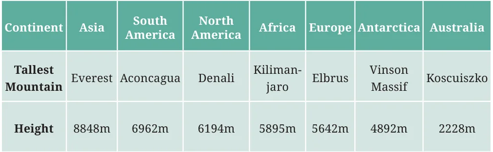
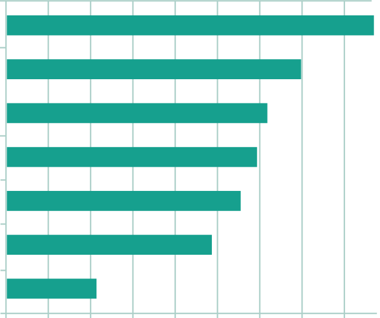
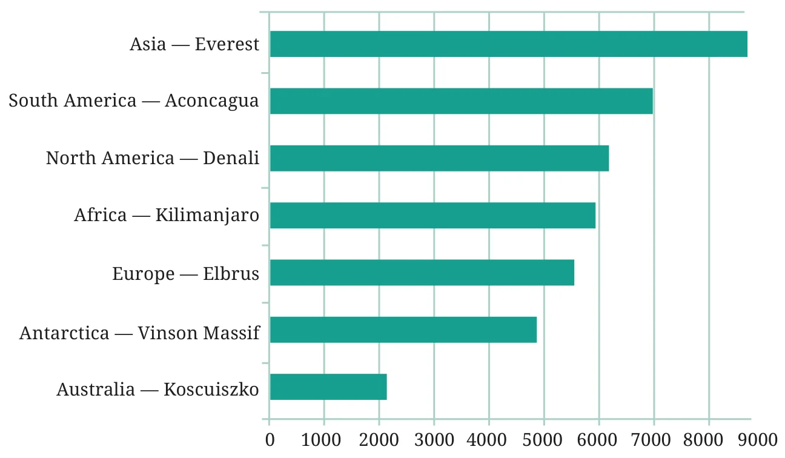
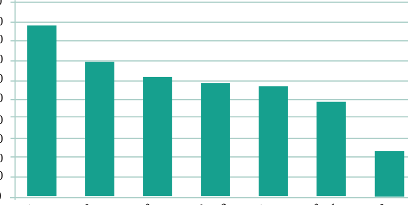
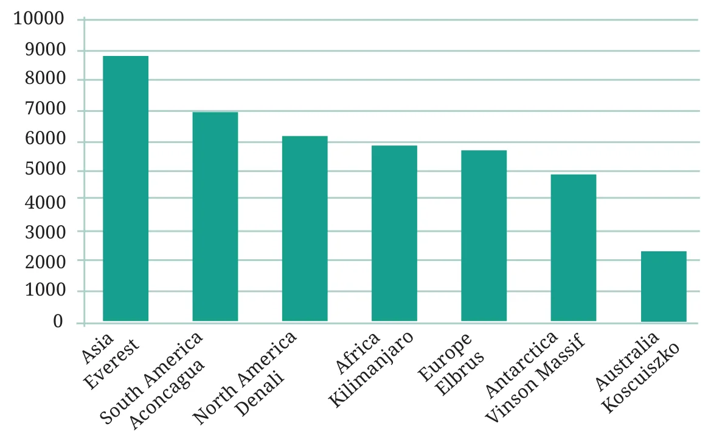

In addition to the steps described in previous sections, there are also some other more artistic and aesthetic aspects one can consider when preparing visual presentations of data to make them more interesting and effective. First, when making a visual presentation of data such as a pictograph or bar graph, it is important to make it fit in the intended space; this can be controlled, for example, by choosing the scale appropriately, as we have seen earlier. It is also desirable to make the data presentation visually appealing and easy-to-understand, so that the intended audience appreciates the information being conveyed. Let us consider an example. Here is a table naming the tallest mountain on each continent, along with the height of each mountain in meters.

How much taller is Mount Everest than Mount Koscuiszko? Are Mount Denali and Mount Kilimanjaro very different in height? This is not so easy to quickly discern from a large table of numbers. As we have seen earlier, we can convert the table of numbers into a bar graph, as shown on the right. Here, each value is drawn as a horizontal box. These are longer or shorter depending on the number they represent. This makes it easier to compare the heights of all these mountains at a glance.


However, since the boxes represent heights, it is better and more visually appealing to rotate the picture, so that the boxes grow upward, vertically from the ground like mountains. A bar graph with vertical bars is also called a column graph. Columns are the pillars you find in a building that hold up the roof.
Below is a column graph for our table of tallest mountains. From this column graph, it becomes easier to compare and visualise the heights of the mountains.


In general, it is more intuitive, suggestive and visually appealing to represent heights, that are measured upwards from the ground, using bar graphs that have vertical bars or columns. Similarly, lengths that are parallel to the ground (for example, distances between location on Earth) are usually best represented using bar graphs with horizontal arcs.